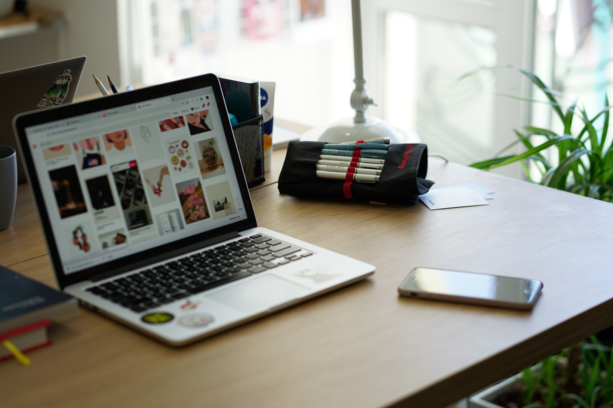
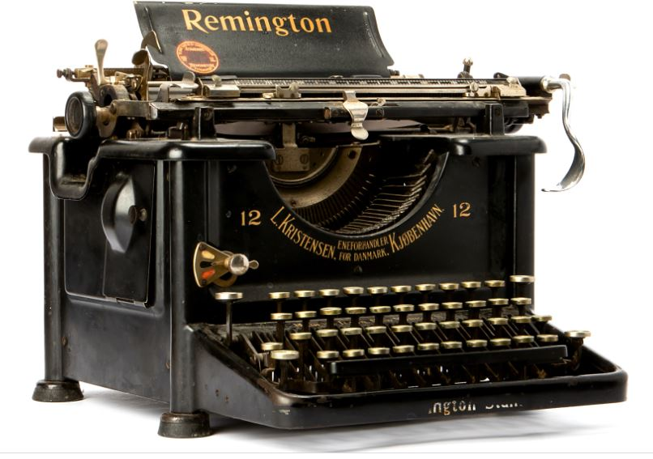

Responsive web
Web que se adapta a tu pantalla
Web flexible
Ver una Web es algo cotidiano en estos días y eso hace importante el diseño de la Web. Si no se adapta a pantallas pequeñas se hace difícil leerlas. Una Responsive Web es visible desde cualquier dispositivo y tu Web tiene un escenario más amplio
CopyWriting
Texto con sentido
Texto directo a tus sentidos
Describir un producto extensamente es una gran tentación. Pero una descripción que provoque una imagen atractiva en la persona que lee es otra cosa. Allí es donde hace su entrada el CopyWriting. Donde lo que escribes se ilumina y provoca la atención.